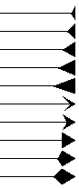
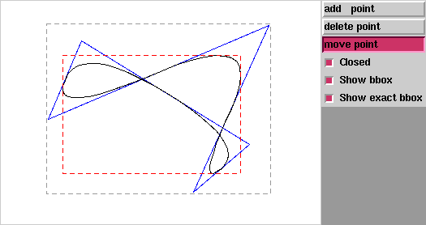

| Autor: | Wojciech Muła |
|---|---|
| Dodany: | 1.12.2006 |
| Aktualizacja: | 6.12.2006 |
Contents
Dla zdarzeń ButtonPress, ButtonRelease, Enter, KeyPress, KeyRelease, Leave, Motion pole state struktury Event jest liczbą. Kolejne bity oznaczają:
Ma to bardzo miłą konsekwencję, ponieważ nie trzeba osobno tworzyć procedur obsługi zdarzeń np. dla różnych modyfikatorów, ale w jednej po prostu sprawdzić stan niektórych bitów tego pola.
Łączenie kodu Pythonowego z TCL-owym polega w przypadku Tkintera na tworzeniu specjalnych funkcji TCL-owych. Tego rodzaju funkcje powstają gdy przy tworzeniu kontrolki podana zostanie opcja command jak również przy podpinaniu funkcji metodami bind, tag_bind oraz protocol (wm_protocol). Co więcej, wszystkie Tkinterowe funkcje zwracają właśnie nazwy TCL-owe, a nie referencje to pythonowych obiektów.
Czy to problem? Wyobraźmy sobie, że chcemy dodać, a nie nadpisać, nową funkcję do kontrolki (opcja command) albo protokołu (metoda protocol). Należałoby odczytać uprzednio przypisaną funkcję, a w nowej ją wywoływać... jakoś. Wystarczy użyć metody widget.tk.call i jako argument podać nazwę funkcji, np. metoda invoke (dostępna w kilku kontrolkach) może zostać zrealizowana następująco:
button.tk.call( button['command'] )
A takie bardziej praktyczne zastosowanie to dołączenie się do łańcucha funkcji obsługujących zdarzenia wysyłane przez menadżery okien:
from Tkinter import *
def foo():
print "WM_DELETE_WINDOW"
master.tk.call(prot)
master = Tk()
prot = master.protocol('WM_DELETE_WINDOW')
print prot # --> '-1210926108destroy' or similar
master.protocol('WM_DELETE_WINDOW', foo)
master.mainloop()
W zasadzie nigdy nie spotkałem się z tą informacją w dokumentacji do Tkintera, ale może coś przeoczyłem.
Argument większości funkcji, tagOrId, wcale nie musi być pojedynczym tagiem — można łączyć wiele tagów i identyfikatorów za pomocą wyrażeń logicznych: && (and), || (or), ! (not) oraz ^ (xor), oraz podwyrażeń w nawiasach. Na przykład:
canvas.delete('red && !squere')
Usunie wszystkie obiekty z tagiem 'red' nie zawierające jednocześnie taga 'square'.
Tk umożliwia uzyskanie odpowiedzi, czy kursor znajduje się nad jakimś obiektem (ze statusem normal) — obiekt taki dostaje automatycznie tag 'current' (w Tkinterze stała CURRENT), wówczas wystarczy użyć metody find_withtag.
Ale dla obiektów takich jak wielokąty i łamane może istnieć potrzeba dowiedzenie się, który wierzchołek leży najbliżej kursora. (Wiem, taka funkcja jest trywialna, ale po co dublować funkcjonalność?).
Umożliwia to metoda index — można ją stosować dla wielokątów i łamanych, tj. obiektów tworzonych metodami create_polygon i create_line. Jeśli zostaną podane współrzędne punktu jako "@x,y" wówczas zostanie zwrócony indeks najbliższego wierzchołka:
index = canvas.index(tagOrId, "@%f,%f" % (x, y))
Uwaga, jest to indeks w liście Tk, która jest „spłaszczona” — jeśli pamiętacie wierzchołki jako pary, trzeba wynik podzielić przez 2.
Kształt strzałki jest podawany w argumencie arrowshape i jest definiowany przez trzy liczby:
canvas.create_line(arrow=BOTH, arrowshape(d1, d2, h))
Grot strzałki jest czworokątem — jeśli przyjąć, że odcinek jest poziomy i kończy się w punkcie (0,0), to kolejne wierzchołki mają następujące współrzędne:
W przypadku łamanych i wielokątów istnieje możliwość edycji pojedynczych wierzchołków istniejącego obiektu. I w niektórych przypadkach może być to wygodniejsze; chociaż ja przeważnie podmieniam hurtem wszystkie wierzchołki metodą canvas.coords.
Uwaga co do indeksów: w Tkinterze te obiekty są reprezentowane jako lista „spłaszczona”, tj. [x0, y0, x1, y1, ...], a nie [(x0,y0), (x1,y1)]. Czyli jeśli chcemy zmienić i-ty element, należy podawać argument 2*i.
Jeśli podany zostanie niewłaściwy indeks (nieparzysty, spoza zakresu) Tkinter poradzi sobie; indeksy spoza zakresu zostaną odpowiednio przycięte, a nieparzyste zmniejszone o 1.
Służy do tego metoda dchars. Jeśli podany zostanie tylko jeden argument, wówczas usuwany jest pojedynczy wierzchołek. Jeśli podane zostaną dwa argumenty, wówczas zostaną usunięte wierzchołki z zakresu przez nie określonego.
line = c.create_line(...) c.dchars(line, index) c.dchars(line, index1, index2) c.dchars(line, index, 'end')
Wartość 'end' jest wartością specjalna, odnosi się do zakońcowego indeksu (nie do ostatniego, ale ostatniego plus 1).
Służy do tego metoda insert. Nowy wierzchołek wstawiany jest przed podany indeks. Jeśli indeks ma wartość 'end' wówczas wierzchołek zostanie doklejony na koniec.
line = c.create_line(...) c.insert(line, index, (x, y)) c.insert(line, 'end', (x, y))
Zmiana współrzędnych wierzchołka
line = c.create_line(...) c.insert(line, index, (x, y)) c.dchars(line, index+2)
Pisałem już o tym kilka dni temu, więc tylko przypomnę:
line = c.create_line(...) index = c.index(line, "@%f,%f" % (x, y))
Ku pamięci:
def tag_raise_top(canvas, tagOrId):
canvas.tag_raise(tagOrId, 'all')
def tag_lower_bottom(canvas, tagOrId):
canvas.tag_lower(tagOrId, 'all')
demo:
- LBM na jasnoszarym kwadracie — tag_raise_top
- RBM na jasnoszarym kwadracie — tag_lower_bottom
Rzeczywisty rozmiar okna, nie tylko canvas, ale każdego innego trzeba odczytywać za pomocą metod winfo_width oraz winfo_height; można również użyć winfo_geometry, ale przeważnie potrzebujemy znać tylko wysokość i szerokość kontrolki, a poza tym akurat ta metoda zwraca łańcuch znaków, więc to niespecjalnie wygodne.
Jednak w przypadku canvas wysokość i szerokość nie mówią jeszcze o rzeczywistym widocznym obszarze. Należy odjąć jeszcze szerokość obramowania (borderwidth) oraz szerokość ramki wskazującej, czy kontrolka ma focus, czy nie (highlightthickness):
def canvas_dimensions(canvas):
w = canvas.winfo_width()
h = canvas.winfo_height()
l = int(canvas['highlightthickness'])
b = int(canvas['borderwidth'])
return (max(w-(l+b), 0.0),
max(h-(l+b), 0.0))
Funkcja która zwróci współrzędne wyświetlanego prostokąta jest bardzo podobna:
def canvas_viewport(canvas):
w = canvas.winfo_width()
h = canvas.winfo_height()
l = int(canvas['highlightthickness'])
b = int(canvas['borderwidth'])
x1 = canvas.canvasx(l+b)
y1 = canvas.canvasy(l+b)
x2 = canvas.canvasx(w - (l+b+1))
y2 = canvas.canvasy(h - (l+b+1))
return x1, y1, x2, y2
Metody scan_mark i scan_dragto są używane wspólnie i służą do zmiany widocznego obszaru (widoku, okna) canvas.
Jak to działa: za pomocą scan_mark zaznaczany jest jakiś punkt Pm, natomiast metodą scan_dragto wybierany jest drugi punkt Pd i całe okno przesuwa się o różnicę: (Pd − Pm) ⋅ a. Czynnik a to przyspieszenie; radzę nie przesadzać z jego wartością.
Na początek dwie uwagi:
Główne przeznaczenie obu metod to realizacja interaktywnego przesuwania zawartości płótna. Na ogół scan_mark woła się raz po kliknięciu myszką, a scan_dragto w funkcji obsługującej zdarzenie z rodzaju <Motion>.
Ale funkcje te mogą być użyte do realizacji funkcji see — funkcji, która tak przesuwa widok, aby wskazany obiekt stał się widoczny. Napisałem to w taki sposób, żeby obiekt znalazł się dokładnie na środku okna:
def see(canvas, item):
x1, y1, x2, y2 = canvas.bbox(item)
cx = (x1+x2)/2
cy = (y1+y2)/2
xo = canvas.canvasx(0)
yo = canvas.canvasy(0)
w = canvas.winfo_width()
h = canvas.winfo_height()
canvas.scan_mark(int(cx), int(cy))
canvas.scan_dragto(int(xo + w/2), int(yo + h/2), 1)
Na początku wyznaczany jest środek obiektu (na podstawie pudełka otaczającego), potem środek okna, a na końcu płótno jest przesuwane, tak by oba punkty się pokryły.
demo:
- LBM + ciągnięcie — przesuwanie zawartości płótna
- LBM + (Ctrl+ciągnięcie) — j.w., większa wartość przyspieszenia
- LBM na kwadracie — przesunięcie widoku tak, by wybrany kwadrat znalazł się na środku okna (zastosowanie funkcji see)
Obiekty umieszczone na canvas mogą znajdować się w czterech stanach:
Stany normal, disabled, hidden mogą być ustawiana przez użytkownika poprzez przypisanie tych łańcuchów znaków do opcji state (uwaga: pusty łańcuch oznacza również stan normal). Natomiast o przypisanie stanu active dba Tk i jest to niezależne od użytkownika
Optyczne sprzężenie zwrotne — Tkinter umożliwia bardzo łatwe wyróżnianie obiektu w zależności od jego stanu, wyręczając użytkownika od wielu zbędnych czynności.
Wyobraźmy sobie, że chcemy, aby aktywny obiekt zmieniał swój kolor, albo grubość linii. Wydawałoby się, że tym celu należałoby coś kombinować ze zdarzeniami (może <Enter>/<Leave>, prędzej <Motion>). Nic z tych rzeczy! Dla opcji: fill, outline, dash, width, stipple, image istnieją odpowiedniki activefill, activeoutline (itd.) oraz disabledfill, disabledoutline (itd.).
Jeśli obiekt jest w stanie normal to używane są zwykłe opcje, jeśli zostanie aktywny, to automatycznie użyte zostaną (o ile są ustawione) opcje active..., a jeśli użytkownik „wyłączy” obiekt, użyte zostaną opcje disabled....
Na początek fragment kodu, dla zilustrowania problemu:
text = "sample text with spaces" id = canvas.create_text(text=text) text2 = cavnas.itemconfigure(id, 'text') print text2
Na konsoli nieoczekiwanie pojawi się:
('sample', 'text', 'with', 'spaces')
Metoda nie zwraca przypisanego łańcucha, ale krotkę — wynik działania: tuple(string.split())! Problem pojawia się po stronie Tkintera.
Rozwiązanie jest dosyć proste, ale wymaga ominięcia Tkintera i odwołania się bezpośrednio do interpretera Tcl-a:
from Tkinter import TclError
def canvas_get_text(canvas, text_id):
tk = canvas.tk
try:
result = tk.call(str(canvas), 'itemconfigure', text_id, '-text')
return tk.splitlist(result)[-1]
except TclError:
return ”
Łamane i wielokąty mogą być „wygładzone” — należy ustawić opcję smooth na 1 lub bezier. (Można również definiować własne funkcje wygładzające, ale jest to tylko możliwe na poziomie języka C).
Metoda canvas.bbox zwraca pudełko otaczające wybranego obiektu, czy grupy obiektów; dokumentacja stwierdza, że The return value may overestimate the actual bounding box by a few pixels, czyli nie tak źle. Jednak dla obiektów wygładzonych zwracane jest pudełko punktów zwyczajnego, niewygładzonego obiektu, a nie krzywej, którą można podziwiać na ekranie.
Pudełko otaczające krzywej można jednak dość łatwo wyznaczyć.
Wbudowana metoda wygładzania opiera się, jak można się domyśleć po wartości bezier, na krzywych Beziera, a gdy spojrzeć w dokumentację lub źródła okazuje się, że chodzi o wielomianowe krzywe B-sklejane drugiego stopnia z równomiernym rozkładem węzłów wewnętrznych. A mówiąc po ludzku jest to ciąg krzywych Beziera danych za pomocą trzech punktów kontrolnych.
Aby otrzymać pudełko otaczające taką krzywą wystarczy wyznaczyć pudełka otaczające każdej z krzywych Beziera i na końcu je wszystkie ze sobą połączyć.
Oznaczmy punkty kontrolne krzywej przez Pa, Pb, Pc.
Pudełko otaczające zależy od punktów:
Wielomiany te są postaci f(t) = at2 + bt + c i wystarczy sprawdzić czy pochodna f'(t) = 0, czyli czy − b/(2a) = 0.
Współczynniki wielomianu otrzymamy z następujących wzorów:
Przedstawiona niżej funkcja wyznacza ekstrema osobno dla osi X i Y i zwraca listy wartości.
def qbezier_bounds((x0, y0), (x1, y1), (x2, y2)): """ Returns extents of cubic bezier curve given by three points. """ # cubic Bezier reprsented in polynomial base # f(t) = A*t^2 + B*t + C Ax = x0 - 2*x1 + x2 Bx = -2*x0 + 2*x1 Cx = x0 Ay = y0 - 2*y1 + y2 By = -2*y0 + 2*y1 Cy = y0 # find extremas: # 1) x(0) = x0 # 2) x(1) = x2 # 3) f(t_e), where f'(t_e)=0 and t_e in (0,1) x = [x0,x2] if abs(Ax) > 1e-10: t = -Bx/(2*Ax) if 0.0 < t < 1.0: t2 = t*t x.append(Ax*t2 + Bx*t + Cx) y = [y0,y2] if abs(Ay) > 1e-10: t = -By/(2*Ay) if 0.0 < t < 1.0: t2 = t*t y.append(Ay*t2 + By*t + Cy) return x, y
Niech obiekty będą określone przez ciąg punktów p0, p1, …, pn − 1. Punkty kontrolne krzywych są wówczas dane jako:
W przypadku łamanej krzywych jest n − 2 i są określone dla i = 2..n − 2. Dodatkowo dla i = 1 punkt Pa = p0, a dla i = n − 1 punkt Pc = pn. Jednak przedstawiony niżej generator tak modyfikuje pierwszy i ostatni punkt, żeby można było stosować powyższe wzory dla i = 1…n − 2.
def exact_line_bbox(points): if len(points) < 2: return None elif len(points) == 2: X = [points[0][0], points[1][0]] Y = [points[0][1], points[1][1]] elif len(points) == 3: X, Y = qbezier_bounds(*points) else: def pt(points): x0, y0 = points[0] x1, y1 = points[1] p0 = (2*x0-x1, 2*y0-y1) x0, y0 = points[-1] x1, y1 = points[-2] pn = (2*x0-x1, 2*y0-y1) p = [p0] + points[1:-1] + [pn] for i in xrange(1, len(points)-1): a = p[i-1] b = p[i] c = p[i+1] yield lerp(a, b, 0.5), b, lerp(b, c, 0.5) X = [] Y = [] for cp in pt(points): x, y = qbezier_bounds(*cp) X.extend(x) Y.extend(y) #fi return min(X), min(Y), max(X), max(Y)
W przypadku wielokątów jest n krzywych, indeksy we wzorach są brane modulo n, natomiast i = 0…n − 1.
def exact_polygon_bbox(points): if len(points) < 2: return None elif len(points) == 2: X = [points[0][0], points[1][0]] Y = [points[0][1], points[1][1]] else: def pt(points): p = points n = len(points) for i in xrange(n): a = p[(i-1) % n] b = p[i] c = p[(i+1) % n] yield lerp(a, b, 0.5), b, lerp(b, c, 0.5) X = [] Y = [] for cp in pt(points): x, y = qbezier_bounds(*cp) X.extend(x) Y.extend(y) #fi return min(X), min(Y), max(X), max(Y)
Uwaga: funkcje exact_line_bbox oraz exact_polygon_bbox zwracają pudełka otaczające naprawdę „dokładne”, tzn. zakłada się, że krzywe mają zerową szerokość. Można później te pudełka rozszerzyć o 1/2 aktualnej szerokości linii — w przypadku połączeń linii (line join) typu ROUND i takiego samego sposobu zakończania linii (line cap) będzie to wciąż dokładne. W przypadku innego sposobu łączenia/zakończania linii już nie.
Większość zadań interakcyjnych ma charakter typowo sekwencyjny, natomiast zdarzenia w Tkinterze są asynchroniczne — nie można przewidzieć kiedy i w jakiej kolejności nastąpią.
Weźmy prosty schemat rysowania prostokąta:
Oto szkic naiwnego rozwiązania:
class Dummy:
def __init__(self, master):
self.state = 'wait'
self.canvas = Canvas(root, master)
self.canvas.bind('<Button-1>', self.click)
self.canvas.bind('<Motion>', self.motion)
self.canvas.bind('<Escape>', self.ESC)
# [...]
def draw_rect(self):
# init drawing
if self.state == 'active':
self.cancel_draw()
self.state = 'wait'
def click(self, event):
if self.state == 'wait':
self.x1 = event.x
self.y1 = event.y
self.item = self.canvas.create_rectangle(
self.x1, self.y1, self.x1, self.y1
)
else:
self.canvas.itemconfig(
self.item, self.x1, self.y1, event.x, event.y
)
self.state == 'wait'
def motion(self, event):
if self.state == 'active':
self.canvas.itemconfig(
self.item, self.x1, self.y1, event.x, event.y
)
def ESC(self):
if self.state == 'active':
self.cancel_draw()
def cancel_draw(self):
if self.state == 'active':
self.canvas.delete(self.item)
self.state = 'wait'
W porównaniu z przedstawionym na wstępie schematem postępowania, przedstawiony program jest kompletnie nieczytelny i na dobrą sprawę nie za bardzo wiadomo co się dzieje.
Więc ten sposób obsługi zadań interakcyjny wydaje się zupełnie chybiony. Bo teraz wyobraźmy sobie, że mamy zadanie, na które nie składają się ledwie dwa, czy trzy kroki, lecz dużo więcej. Oraz że mamy wiele różnych zadań do obsłużenia. Wówczas należałoby stworzyć dla każdego zadania osobny zestaw procedur obsługi zdarzeń i dynamicznie je podpinać w zależności od wybranego zadania, albo używać jednego zestawu, ale wówczas te funkcje rozdęłyby się do jakiś monstrualnych rozmiarów i de facto zadanie byłoby rozbite na kilka mniejszych (próbkę tego dałem wyżej), formalnie niepołączonych ze sobą funkcji.
A więc co chcemy osiągnąć:
Zaczniemy od końca, bo to jak się okaże rozwiązanie tego problemu spowoduje automatycznie rozwiązanie dwóch wcześniejszych.
Na szczęście w Tkinterze dostępne są zmienne StringVar, BooleanVar, IntVar oraz DoubleVar, dla których istnieje mechanizm oczekiwania — wywołanie metody widget.wait_variable(var) powoduje wejście Tkintera w lokalną pętlę (bez blokowania głównej pętli) i przerwanie jej dopiero wtedy, gdy zmienna var zostanie zmieniona.
Ponieważ główna pętla działa bez przeszkód, zatem zdarzenia są normalnie obsługiwane i w procedurach ich obsługi można ustawiać odpowiednie zmienne, informując tym samym główny program o wystąpieniu zdarzenia.
Mamy więc mechanizm który umożliwia oczekiwanie na zdarzenia. W porządku, program czeka na zdarzenia, bo tyle ma akurat do roboty, ale gdy wreszcie się doczeka i zacznie wykonywać jakieś czasochłonne działania, co wtedy ze zdarzeniami, które w tym czasie nastąpią? Procedury obsługi zdarzeń mogą sobie zmienną ustawiać do woli, główny program nigdy tego nie zauważy.
Dlatego ze względów praktycznych lepiej jest stworzyć osobną kolejkę zdarzeń, która będzie wypełniana przez procedury obsługi zdarzeń.
Dzięki temu nawet jeśli program główny jest zajęty, to gdy będzie chciał sprawdzić czy były jakieś zdarzenia po prostu sięgnie do kolejki; a jeśli nie było, to po prostu poczeka.
Dodatkowym plusem tego rozwiązania jest to, że dodając nowe zadanie interakcyjne nie trzeba dodawać nowych funkcji obsługi zdarzeń. One cały czas robią to, co miały robić — dopisują dane do kolejki, a to ile funkcji czyta kolejkę i jak ją wykorzystuje nie ma znaczenia.
Pisząc „program główny” mam na myśli aktualnie wykonywaną procedurę obsługującą pewne zadanie interakcyjne. Takich procedur może istnieć w programie wiele, ale ja rozwiązałem to w ten sposób, że jest rzeczywiście tylko jedna procedura główna, która wywołuje zadaną funkcję.
Program główny można uruchomić w osobnym wątku i wówczas zamiast tkinterowych zmiennych można wykorzystać muteksy, albo lepiej dostępny od Pythona 2.4 moduł Queue. Tkinter jest jednowątkowy i czytałem, że mogą występować problemy z jego wykorzystaniem w programach wielowątkowych. Jednak tutaj jest tylko jeden wątek, przetwarzane jest jedno zadanie interakcyjne — podczas testów nie zanotowałem problemów.
Ale program w ogóle nie musi korzystać z wątków — można zlecić Tkinterowi, by odpalał funkcje, gdy już nie będzie miał nic do roboty; służy do tego metoda after_idle. To w wielu przypadkach z pewnością wystarczy.
Te wszystkie rzeczy oprogramowałem w przedstawionym niżej module
(Po uruchomieniu python tkes.py można pobawić się prościutkim programem rysunkowym).
Problem, który przedstawiłem na początku da się teraz rozwiązać w ten sposób:
class Dummy:
def __init__(self, master):
self.canvas = Canvas(root, master)
self.es.EventsSerializer('<Escape>',
{self.canvas: ['<Button-1>', '<Motion>', '<Escape>']})
def draw_rect(self):
try:
event = self.es.wait_event('<Button-1>')
x1, y1 = event.x, event.y
rect = self.canvas.create_rectangle(x1, y1, x1, y1)
for _, event in self.es.report_events(['<Motion>'], ['<Button-1>']):
x2, y2 = event.x, event.y
self.canvas.coords(rect, x1, y1, x2, y2)
except FunctionInterrupted:
try:
self.canvas.delete(rect)
except UnboundLocalError:
pass
Skrótowy opis modułu. Każde zdarzenie ma nazwę, może to być nazwa Tkintera albo własna (niekoniecznie łańcuch znaków). Jest jedno wyróżnione zdarzenie, którego pojawienie się powoduje podniesienie wyjątku FunctionInterrupted; nie można tego zdarzenia zablokować.
Najważniejsze metody: